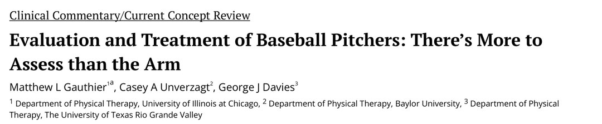
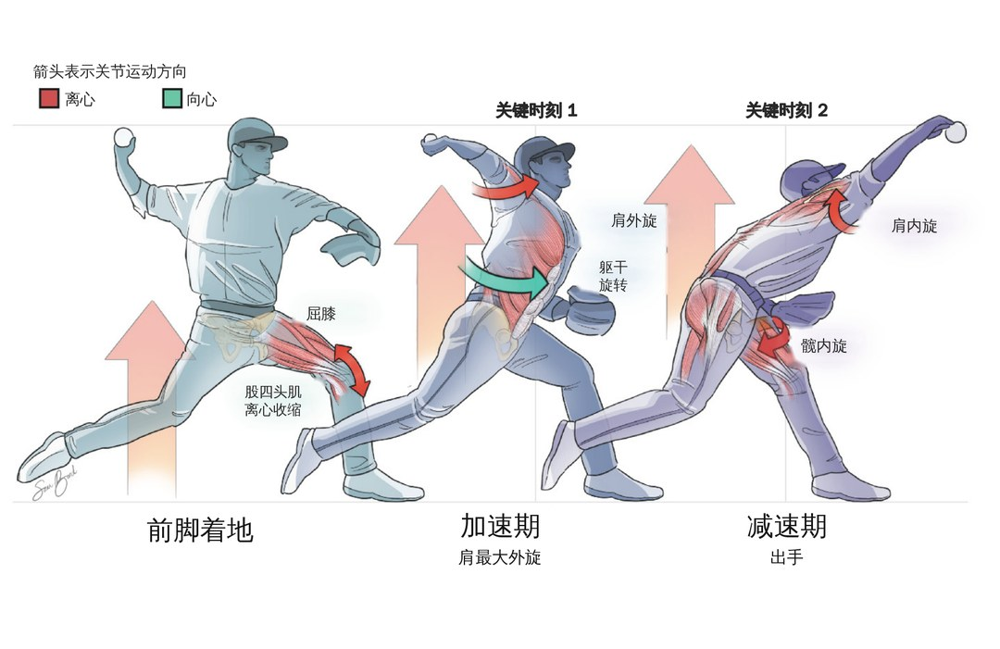
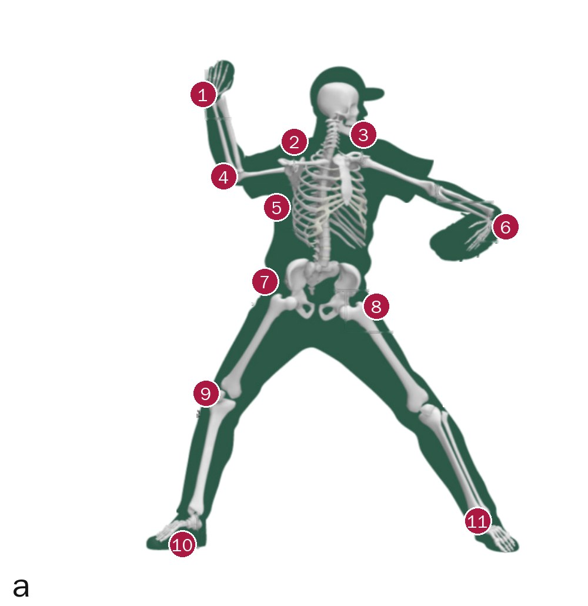
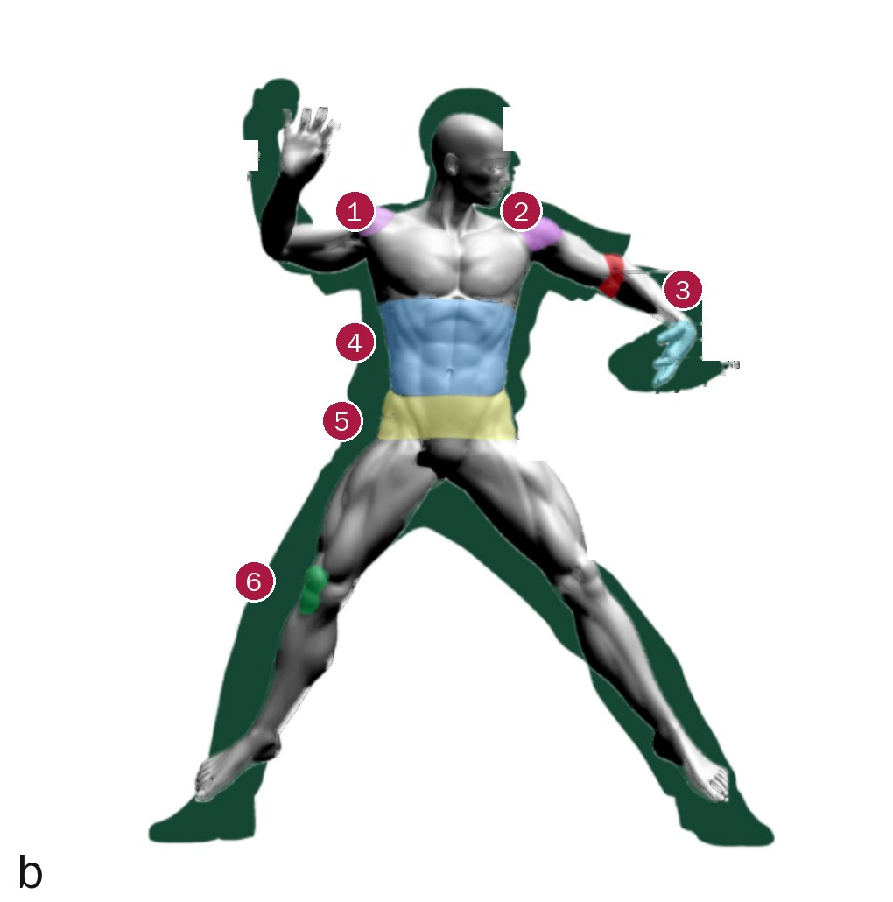
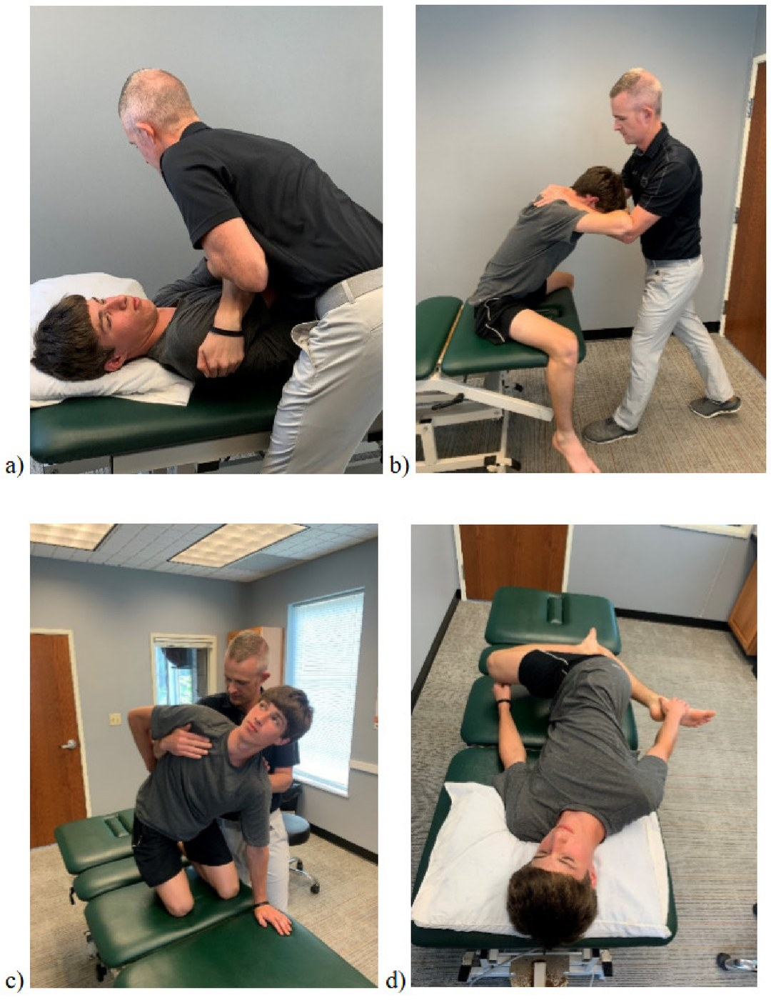
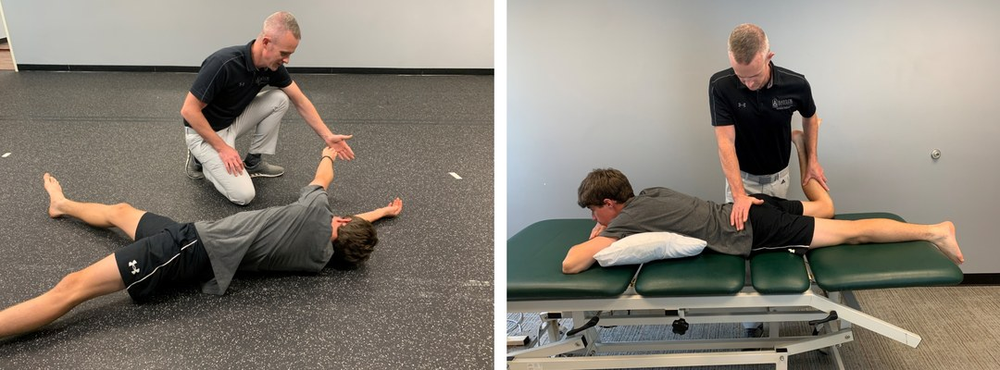
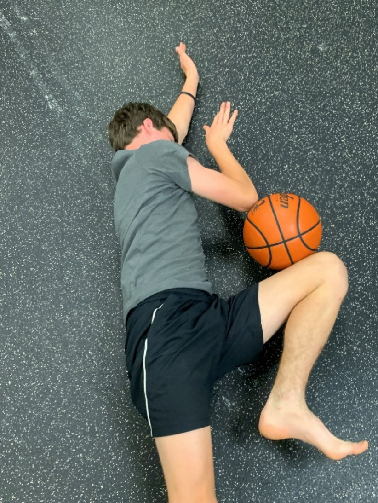
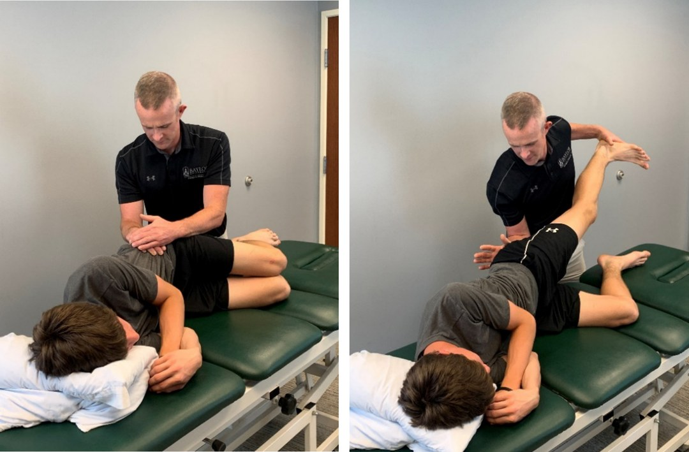
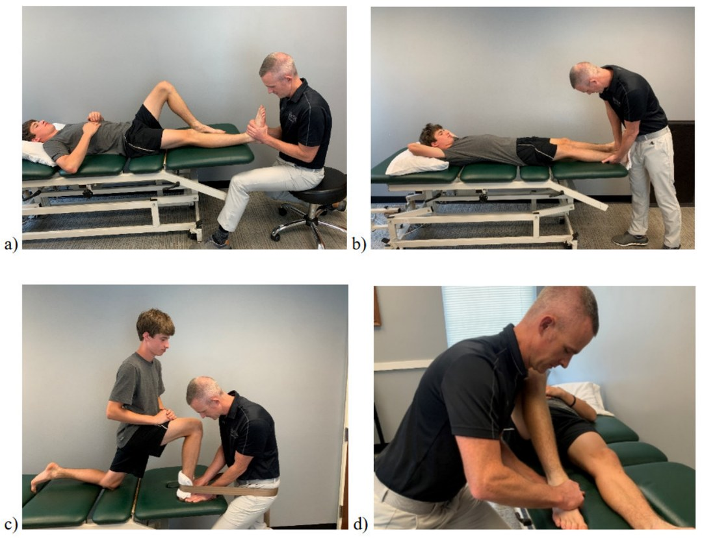

🔖原文首页（IJSPT 2025 年第 20 卷第 1 期）
📚 文献卡片
▪ 英文原题：Evaluation and Treatment of Baseball Pitchers: There’s More to Assess than the Arm（棒球投手的评估与治疗：要评估的不只是手臂）
▪ 作者：Matthew L. Gauthier, Casey A. Unverzagt, George J. Davies
▪ 机构：伊利诺伊大学芝加哥分校 · 贝勒大学 · 德克萨斯大学里奥格兰德河谷分校 物理治疗系
▪ 期刊：International Journal of Sports Physical Therapy（IJSPT）
▪ 年卷期：2025;20(1):111-124
▪ PMCID：PMC11698006
▪ 文章类型：临床评论 / 现代概念综述（Clinical Commentary / Current Concept Review）
▪ 证据级别：5 级
▪ 关键词：overhead athlete · baseball · biomechanics · kinetic chain
| 水平 | 肩部损伤占比 | 其中投手 | 肘部损伤占比 | 其中投手 |
|---|---|---|---|---|
| 大学/职业 | 最高 35% | 最高 60% | 7%～16% | 40% |
| 高中 | 13%～21% | 40% | 11%～12% | 60% |
肩肘损伤这么多，康复和预防自然都盯着上肢。但投球早已被证明是全身动力链动作，临床上却很少关注躯干和下肢。
"In leaving no stone unturned, clinicians can address all components of the kinetic chain in throwers, maximizing performance and mitigating risk of injury."
"不放过任何细节，临床人员才能处理投手动力链的每一个环节，既提高表现，又降低受伤风险。"
Atwater（1979）指出：下肢和躯干这些较大、较慢的近端环节逐步产生动能，再由较小、快速的远端手臂释放出去。投球分为 6 个阶段：准备（wind-up）→ 跨步 → 挥臂后期 → 加速 → 减速 → 随球。
Fleisig（1995）提出上肢受力最大的两个“关键时刻”：即将达到肩最大外旋时，以及刚出手后。

🔖图1：前脚着地、加速期和减速期的关节运动和肌肉动作（红色为离心，绿色为向心；图中英文已译为中文）
一句话概括：“从脚趾到鼻尖”评估投手，下肢和躯干的问题至少要和手臂一样重视。
| 阶段 | 关键环节 | 证据 |
|---|---|---|
| 准备期 | 静止 → 前腿抬到最高 支撑腿单腿站立时的腰盆控制 | 腰盆控制差的投手，因伤缺席超过 30 天的可能性显著更高（Chaudhari）；支撑腿腰盆控制差与肩前方、肘内侧扭矩增加相关（Laudner） |
| 跨步期 | 前腿最高 → 前脚着地 支撑腿髋外展肌推离投手板 | 投手的支撑腿髋外展力量明显弱于野手；受伤的高中投手支撑腿髋外展更弱（Hamano）；支撑腿地面反作用力峰值与球速密切相关 |
| 挥臂后期 | 前脚着地 → 肩最大外旋 前腿股四头肌离心“刹车” | 前脚着地时的屈膝角度与肩肘应力显著相关（Chalmers）；刹车不足会打乱躯干旋转时机，加大肩前方和肘内侧负荷 |
| 加速期 | 肩最大外旋 → 出手 躯干旋转的活动度、力量、控制和时机 | 约 86% 经肘部传递的能量来自躯干运动（Aguinaldo & Escamilla）；高中投手躯干旋转不如职业投手，肩肘应力更大 |
| 减速与随球 | 出手 → 肩最大内旋 前腿髋内旋，让骨盆和躯干在股骨上减速 | 健康投手髋内旋约 30°～35°；髋内旋减少与职业投手的髋、腹股沟、腰背和腹部损伤相关 |
躯干侧倾的代价：Oyama 发现加速期向对侧倾斜越多，球速越快，但上肢负荷也越大；Solomito 进一步量化：对侧倾斜只让球速增加 1.5%，却让肩前方和肘内侧扭矩分别增加 3.2% 和 4.8%。
"When examining the entire kinetic chain, the concept of “Test, Don’t Guess” applies."
"检查整条动力链时，要遵循“测量，别猜”的原则。"
• 经典案例：1930 年代名人堂投手 Dizzy Dean 被平飞球击中脚，踇趾骨折，之后投球动作改变，最终导致改变职业生涯的手臂伤病
• 腹斜肌拉伤在投手中很常见，同样提示要检查躯干的活动度、柔韧性和力量
• 作者介绍的都是普通诊所就能做的检查，不需要动作捕捉或测力台

🔖图2a：动力链各环节的活动度考量（原图英文标注已改为红色编号，含义见下方）

🔖图2b：动力链各部位的肌力/控制考量（含义见下方）
图2a 活动度：1 肩胛后缩/前伸（后缩不足难以进入挥臂后期；前伸不足影响随球时的水平内收）；2 肩胛上/下回旋、上提/下沉（导致盂肱关节代偿性活动过度）；3 盂肱关节屈伸、内收/外展、内/外旋（限制“后仰”姿势、影响随球、降低球速）；4 肘屈伸（出手时肘部扭矩增加）；5 躯干屈伸、侧屈、旋转（限制力量、球速和“后仰”，降低核心稳定）；6 前臂旋前旋后、腕屈伸/桡尺偏、手指屈伸/旋转（影响投球“质量”，如转速）；7 髋屈伸（屈曲限制抬腿，伸展限制蹬地力量和球速）；8 髋内收/外展、内/外旋（影响下肢稳定和旋转力量）；9 膝屈伸（屈曲限制抬腿，伸展限制离心制动）；10 第一跖趾屈伸、踝跖屈/背伸（限制蹬地）；11 距下关节内/外翻（影响下肢稳定）
图2b 肌力/控制：1 盂肱内/外旋（内旋影响肩部发力）；2 肩胛前伸/后缩、上/下回旋（前伸影响肩胛离心制动，上回旋不足难以进入挥臂位）；3 肘、腕、手（影响投球“质量”）；4 躯干屈伸、旋转（影响躯干发力、出手后减速以及下肢向上肢的能量传递）；5 髋屈伸、外展、外旋（伸展影响蹬地，外展影响发力，外旋影响出手后减速）；6 膝屈伸（伸展影响离心制动）
表 1 活动度评估（可用量角器、倾角仪或卷尺；所有项目期望肢体对称指数 >90%）
| 关节/部位 | 活动度 | 不足时对表现的影响 |
|---|---|---|
| 第一跖趾关节 | 屈/伸 | 限制蹬地 |
| 踝 | 跖屈/背伸 | 限制蹬地 |
| 距下关节 | 内翻/外翻 | 下肢稳定性差；从投手板蹬出的能力下降 |
| 膝 | 屈/伸 | 屈曲：限制准备期抬腿 伸展：限制离心制动 |
| 髋 | 屈/伸 | 屈曲：限制准备期抬腿 伸展：限制蹬地力量和球速 |
| 髋 | 内收/外展 | 下肢稳定性 |
| 髋 | 内旋/外旋 | 限制旋转力量和躯干减速能力 |
| 躯干 | 屈/伸 | 伸展：限制“后仰”姿势 屈曲：限制力量和球速 |
| 躯干 | 侧屈 | 躯干稳定性 |
| 躯干 | 旋转 | 限制旋转力量和球速 |
| 肩胛 | 前伸/后缩；上/下回旋；上提/下沉 | 限制正常肩胛运动 |
| 盂肱关节 | 屈/伸 | 屈曲：难以达到“后仰”姿势 |
| 盂肱关节 | 内收/外展 | 外展：影响加速和出球 内收：影响随球 |
| 盂肱关节 | 内旋/外旋 | 外旋：难以达到“后仰”姿势 内旋：可能影响球速和随球 |
| 肘 | 屈/伸 | 屈曲：出手时肘部扭矩增加 |
| 肘、腕、手指 | 旋前/旋后；腕屈伸、桡/尺偏；手指屈伸、旋转 | 影响投球“质量”，如转速 |
表 2 肌力评估（徒手肌力测试或手持测力计；所有项目期望肢体对称指数 >90%）
| 关节/部位 | 肌力评估 | 不足时对表现的影响 |
|---|---|---|
| 踝 | 跖屈/背伸 | 可能限制加速期的蹬地 |
| 膝 * | 屈/伸 | 伸展：削弱离心制动 |
| 髋 | 屈/伸 | 伸展：削弱腿部驱动 |
| 髋 | 内收/外展；内旋/外旋 | 可能限制活动和动态稳定，影响最佳表现 |
| 躯干 | 屈/伸 | 屈曲：削弱躯干发力 |
| 躯干 | 侧屈 | 可能增加肩/肘应力 |
| 躯干 | 旋转 | 削弱躯干发力和球速 |
| 肩胛 | 前伸/后缩 | 前伸：削弱肩胛运动的离心制动 |
| 肩胛 | 上/下回旋 | 上回旋：可能难以进入挥臂位置 |
| 肩胛 | 上提/下沉 | 可能限制活动和动态稳定 |
| 盂肱关节 * | 屈/伸；内收/外展 | 可能限制活动和动态稳定 |
| 盂肱关节 * | 内旋/外旋 | 内旋：影响肩部发力 |
| 肘 | 屈/伸 | 可能限制活动 |
| 肘、腕 | 旋前/旋后；腕屈伸、桡/尺偏 | 影响投球“质量”，如转速 |
| 手/手指 ǂ | 屈/伸；旋转 | 影响投球“质量”，如转速 |
表 3 关节本体感觉
| 关节/部位 | 不足时对表现的影响 |
|---|---|
| 所有关节 | 可能影响投手进入正确投球位置的能力，或降低投球的可重复性 |
表 4 上肢功能表现测试（双侧测试期望肢体对称指数 >90%；部分测试有常模和界值）
| 测试 | 目的 | 不足时对表现的影响 |
|---|---|---|
| 单臂推铅球测试 | 评估单臂爆发力 | 可能难以发挥最大爆发力 |
| 俯卧盂肱外展位药球坠落测试 | 评估肩后方复合体的爆发力和耐力 | 出手后手臂减速能力可能受损 |
| 俯卧盂肱 90/90 位药球坠落测试 | 评估肩后方复合体的爆发力和耐力 | 出手后手臂减速能力可能受损 |
| 跪姿盂肱 90/90 位药球掷墙 | 评估肩复合体的爆发力和耐力 | 提示投球功能位的耐力不足 |
| 闭链上肢稳定性测试（CKCUEST） | 评估上肢和躯干的爆发力 | 提示上肢和躯干爆发力不足，可能预测受伤风险增加 |
治疗前必须有完整的病史和体检，否则容易陷入可得性偏差、锚定偏差、确认偏差、权威偏差和错觉相关，变成“霰弹枪式”干预。如果发现腰盆或下肢问题，它们至少要得到和上肢同样多的关注。
活动度不足的环节，上下相邻关节往往会代偿性地活动过度。胸椎伸展和旋转受限时：

🔖图3：改善胸椎伸展和旋转的干预。a 仰卧胸椎Ⅴ级手法；b 颈胸交界处松动；c 四点跪位胸椎旋转；d Bretzel 拉伸
• 软组织：关注髋屈肌和髋旋转肌的长度；干针、软组织松动、器械辅助软组织松动、主被动拉伸
• 活动度够、稳定性不够：所有平面都要练，重点是水平面（旋转）控制
躯干训练的进阶顺序：
| 阶段 | 举例 |
|---|---|
| ① 活动度 | 胸椎松动/手法、自我松动、四点跪位辅助活动、动态活动 |
| ② 运动控制 | 分节翻滚、骨盆对角线运动、正确募集盆底肌 |
| ③ 长力臂等长 | 抗阻鸟狗式、Pallof 推、持续战绳、侧桥 |
| ④ 主平面 | 俯卧伸展进阶、地雷管推举、过头深蹲 |
| ⑤ 水平面 | 旋转类动作 |
| ⑥ 爆发力 | 爆发性药球训练、土耳其起立、爆发性对角线深蹲和上举 |

🔖图4（左）：分节翻滚；图5（右）：缩短力臂进阶的翻滚
髋旋转对加速（外旋）和减速（内旋）都至关重要。
• 关节性受限：长轴牵引、侧向牵引、侧向牵引加内/外旋；俯卧位、股骨内旋时松动骨盆（骨盆在股骨上动）以恢复髋内旋
• 家庭自我松动：向后下滑动加后撤步、股骨外侧滑动、跪姿旋转加主动内旋
• 主动训练：shin box 髋推（一腿内旋、一腿外旋的坐姿练习）、髋关节控制性旋转（CARs）、相扑深蹲

🔖图6：对骨盆施加前外侧分级松动，同时把对侧腿保持在内旋位，形成相对的髋内旋松动
• 单腿站立腰盆控制差：按 Andreyo 等的 drop squat 进阶训练
• 支撑腿髋外展无力：蚌式、侧卧外展、“怪兽走”、单腿站立外展虽然能练到肌肉，但很难迁移到投球动作
• 作者推荐：先在侧卧位学习骨盆前上提和骨盆后下压，建立本体感觉和运动控制
• 之后：负重、投球专项的训练——SportCord 弹力绳抗阻外展、抗阻外展加旋转、突破式抗阻外展
• 高级：爆发性侧跳、Shuttle 上侧卧跳、爆发性抗阻单腿深蹲

🔖图7（左）：用手法和口令引导骨盆前上提；图8（右）：用手法和口令引导骨盆后下压
最常见的问题是前腿股四头肌离心控制不足。前腿像“锚”，身体绕它旋转，把支撑腿产生的直线动力转为旋转动力，形成躯干和手臂的“弹弓”效应。离心控制不足，不仅影响能量传递，也让投手投完球后难以迅速回到防守准备姿势，还会增加关节软骨和半月板的负荷。
进阶：负重双腿深蹲（强调下降期）→ 单腿深蹲 → 强调离心期的增强式训练 → 模仿投球的侧向动作。
投手常见背伸受限和踇趾伸展受限。一项 228 名棒球运动员的前瞻性队列研究发现，后腿（支撑腿）背伸受限与青少年肩肘损伤密切相关；背伸受限也会影响动态平衡。

🔖图9：恢复踝背伸的手法。a 长轴牵引；b 距骨向后滑动；c 动态关节松动术；d 胫骨外侧滑动加动态关节松动
• 自我松动：跪姿膝触墙、距骨固定下的动态松动、后足外翻自我松动
• 软组织：腓肠肌/比目鱼肌干针、软组织松动、器械辅助、主被动拉伸
• 主动训练：弓步、深蹲、台阶提踵、前足垫楔形块的单腿罗马尼亚硬拉
• 踇趾伸展受限：同样按“手法 → 自我松动 → 软组织 → 拉伸 → 主动使用新活动度”处理
损伤前后，过头运动员会发生神经可塑性改变。建议加入反应性神经认知（RNC）测试和训练：动态、专项、无创、需要反应敏捷性，评估反应时间、注意力、记忆、感知和多任务能力。
Wilk 等提出的测试组合：
• 反应性闭链上肢稳定性测试（CKCUEST+）
• 反应性三角 CKCUEST+
• 反应性左右 CKCUEST+
• 反应性开链 90/90 掷墙
反应灯（如 Blaze Pods）可以量化速度、反应时间和左右不对称。发现不足时，往往只需调整而不是推翻原方案：加入双任务、双人训练、对不可预测刺激作出反应，或改变视觉刺激。
"The biggest predictor of injuries in pitchers is not necessarily biomechanical but is likely overuse."
"投手受伤最大的预测因素不一定是生物力学，而很可能是过度使用。"
所以除了动力链，还要管理训练负荷和生物-心理-社会因素，忽略任何一项，轻则表现下降，重则受伤。
• 证据级别低：5 级临床评论，治疗部分（尤其是髋外展的侧卧骨盆训练、躯干进阶）主要基于作者经验，没有对照研究
• 机制证据多为相关性：腰盆控制、髋外展力量、屈膝角度、躯干旋转与损伤或应力的关系大多来自横断面或队列研究，不能证明因果
• “>90% 对称指数”：表 1、2、4 统一用 90% 作为期望值，但投手优势侧与非优势侧本就存在适应性差异（如肩外旋/内旋），不宜机械套用
• 作者自己的提醒：最大的损伤预测因素很可能是过度使用，而不是生物力学
• 小问题：原文多处用“Effects”代替“Affects”，个别句子语法不完整（如“If the deficit articular in nature”），不影响理解
① 动力链：能量从下肢经躯干传到手臂，约 86% 的肘部能量来自躯干
② 分阶段：准备看腰盆控制，跨步看髋外展，挥臂后期看前腿刹车，加速看躯干旋转，减速看前腿髋内旋
③ 检查：测量，别猜；活动度、肌力、本体感觉、上肢功能测试，期望对称指数 >90%
④ 治疗：躯干按“活动度 → 控制 → 等长 → 主平面 → 水平面 → 爆发力”进阶
⑤ 下肢：髋旋转松动、骨盆前上提/后下压、前腿离心控制、踝背伸
⑥ 全局：加入神经认知训练，别忘了过度使用才是最大风险
欢迎关注骨科康复小黄公众号，获取更多物理治疗的专业知识！
📄参考文献：
Gauthier ML, Unverzagt CA, Davies GJ. Evaluation and Treatment of Baseball Pitchers: There’s More to Assess than the Arm. Int J Sports Phys Ther. 2025;20(1):111-124. doi:10.26603/001c.127461. PMCID: PMC11698006.
文中图片均来自原文，图 1 英文已译为中文，图 2 英文标注改为编号并附中文对照，表 1～4 已译为中文，仅用于学术交流。